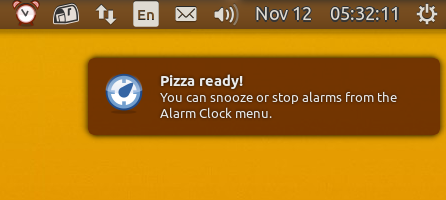
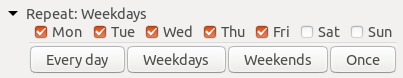

News

-
{%- assign date_format = "%b %-d, %Y" -%}
{%- for post in posts -%}
- {{ post.title | escape }} Posted {{ post.date | date: date_format }}
- {{ post.content }} {%- endfor -%}
Latest activity
- FIXME
- FIXME
Alarm Clock is a fully-featured alarm clock for use with an AppIndicator implementation. It's easy to use yet powerful with support for multiple repeatable alarms, as well as snoozing and a flexible notification system.
Alarm Clock is easy to use - clicking the panel icon will bring up a list of alarms. From there you can add, edit and delete alarms as well as start, stop and snooze them.
Alarm Clock supports two types of alarms:  Clocks and
Clocks and  Timers. The Clock will go off at a specific time of day while the Timer will ring after the specified amount of time.
Timers. The Clock will go off at a specific time of day while the Timer will ring after the specified amount of time.
Alarm Clock will notify you of an alarm by either playing a sound or starting your favorite music player! You can of course specify which sound you would like to use and whether it should be repeated or not. It’s also possible to specify a custom command to run instead of the pre-defined media players.
A notification bubble will appear when an alarm goes off, just in case you missed the sound.
Both alarms and timers can be snoozed - it's as easy as selecting the alarm and clicking "Snooze".
For convenience, the right-click menu of the panel icon provides quick access to snoozing and stopping any beeping alarms.
Alarm Clock is powerful and supports multiple alarms as well as auto-repeatable alarms.
If you're on Ubuntu XX.XX "unknown codename" or later, you can install Alarm Clock by clicking this big green button: {%- endcomment -%}
Alarm Clock is currently not present in the Ubuntu repositories. To install it, first add the PPA by running the following two commands in a terminal:
sudo add-apt-repository -y ppa:tatokis/alarm-clock-applet
sudo apt updateThen, you can click the big button below to install!
Yes, I want it!
This will install the alarm-clock-applet package. If the button above does not work, you can also install it using the terminal by running
sudo apt install alarm-clock-appletAlarm Clock can be installed from the AUR.
Please make sure you have first read through the Arch Wiki AUR page, especially the note in the Installing and upgrading packages section.
Any issues opened about errors while loading shared libraries on Arch-based systems will be closed.
{%- comment -%}Alarm Clock is currently only present in Debian testing repository. You can click the big button above. If you do not use Debian testing, you will need to manually build from source, or create your own Debian packages.
{%- endcomment -%}The latest stable release is Alarm Clock {{ latest_ver }}.
{{ release.tag_name }}.tar.gz
{%- endfor -%}
alarm-clock-applet-0.3.4.tar.gzalarm-clock-applet-0.3.3.tar.gzalarm-clock-applet-0.3.2.tar.gzalarm-clock-applet-0.3.1.tar.gzalarm-clock-applet-0.3.0.tar.gzalarm-clock-applet-0.2.6.tar.gzalarm-clock-0.2.5.tar.gzalarm-clock-0.2.4.tar.gzalarm-clock-0.2.3.tar.gzalarm-clock-0.2.2.tar.gzalarm-clock-0.2.1.tar.gzalarm-clock-0.2.tar.gzalarm-applet-0.1.2.tar.gzalarm-applet-0.1.1.tar.gzalarm-applet-0.1.tar.gz(In version 0.2, the project changed name from Alarm Applet to Alarm Clock)
Please check the Requirements section of the README for information regarding dependencies. They're usually in the *-dev or *-devel packages in most distributions.
{% capture requirements_ubuntu %}{%- include requirements_ubuntu.md -%}{% endcapture %} {{ requirements_ubuntu | prepend: "#" | markdownify }} {% capture build_from_source %}{%- include build_from_source.md -%}{% endcapture %} {{ build_from_source | prepend: "#" | replace: "Please post any bugs and suggestions to the GitHub issue tracker!{% comment %} Feedback on the various blueprints is also greatly appreciated.{% endcomment %} If you'd like to see Alarm Clock speak your native tongue, consider helping out with the translations!